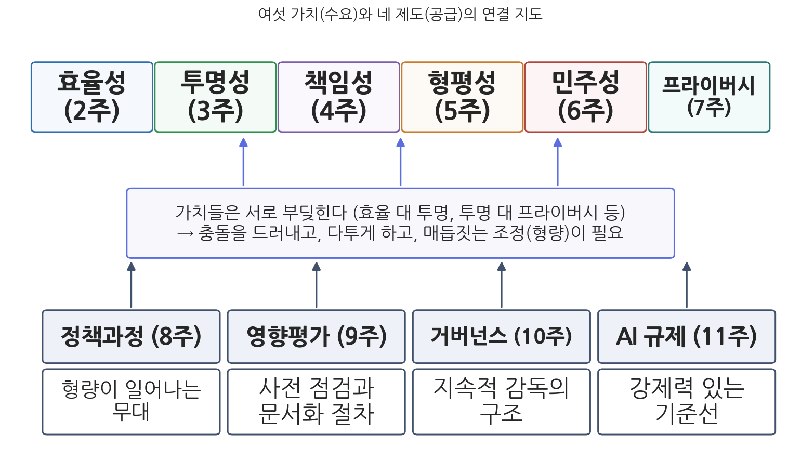
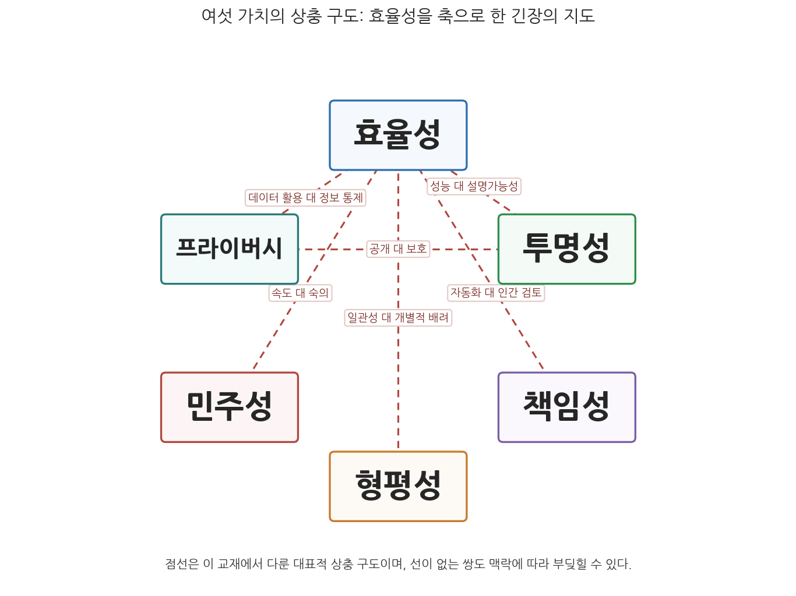

14주차 1차시. 종합 (1): 공공가치의 렌즈로 다시 보기
기술은 좋은 것도 나쁜 것도 아니다. 그렇다고 중립적인 것도 아니다. (멜빈 크랜츠버그, 「기술과 역사: 크랜츠버그의 법칙」, 1986)
이 장에서 배우는 것
2021년 1월 15일, 네덜란드의 마르크 뤼터(Mark Rutte) 총리가 내각 총사퇴를 발표했다. 총선을 불과 두 달 앞둔 시점이었다. 정부를 무너뜨린 것은 전쟁도 경제 위기도 아니었다. 국세청이 보육수당 부정수급을 잡겠다며 돌린 위험 평가 알고리즘, 그리고 그 알고리즘이 십수 년에 걸쳐 수만 가정에 입힌 피해였다. 시스템은 이중국적과 저소득을 위험 신호로 학습했고, 약 2만 6천 명의 부모가 사기범으로 몰려 수천만 원대의 수당을 토해 내야 했다. 파산, 실직, 이혼, 그리고 가정에서 분리된 아이들이 뒤따랐다. 효율을 위해 도입된 기계가 투명하지 않게 작동했고, 아무도 책임지지 않았으며, 특정 집단을 차별했고, 의회는 뒤늦게야 진상을 알았다. 이 하나의 사건 안에 우리가 한 학기 동안 배운 거의 모든 것이 들어 있다.
이번 주는 이 교재의 마지막 주차, 종합의 시간이다. 1주차에서 우리는 이 과목의 관점을 "공공가치의 렌즈"라고 불렀다. AI가 행정에 좋은가 나쁜가를 묻는 대신, 효율성, 투명성, 책임성, 형평성, 민주성, 프라이버시라는 여섯 가치 각각에 AI가 어떤 영향을 미치는지 따져 보자는 약속이었다. 2주차부터 7주차까지 우리는 그 여섯 렌즈를 하나씩 갈아 끼우며 같은 대상을 여섯 번 보았고, 9주차부터 12주차까지는 정책과정, 영향평가, 거버넌스, 규제라는 네 가지 제도의 이야기를 보았다. 이제 흩어진 렌즈들을 한 자리에 모아 서로 어떻게 부딪히고 어떻게 조율되는지를 보고, 마지막으로 네덜란드 사례 하나를 여섯 가치와 네 제도의 렌즈로 통째로 해부한다. 구체적으로 다음을 배운다.
- 여섯 가치 각각의 전통적 의미, AI가 제기한 새 문제, 대응 수단을 한 표(표 14-1)로 정리하기
- 가치들이 서로 상충하는 대표적 구도(효율 대 투명, 투명 대 프라이버시 등)와 조율의 원리
- 9-12주에 배운 네 제도가 가치 충돌의 "조정 장치"라는 관점
- 하나의 실제 사례를 여섯 가치와 네 제도로 통합 분석하는 방법
이 장은 하나의 질문을 따라 전개된다. "여섯 개의 렌즈로 따로 보았던 것들을 하나의 그림으로 합치면 무엇이 보이는가?"
1.1 2-7주의 여섯 가치를 한 표에 놓는다 (전통적 의미 → AI의 도전 → 대응 수단) → 1.2 가치들이 부딪히는 상충 구도를 정리하고 조율의 원리를 따진다 → 1.3 9-12주의 네 제도를 "가치 충돌의 조정 장치"로 다시 읽는다 → 1.4 네덜란드 아동수당 스캔들 하나를 여섯 가치와 네 제도의 렌즈로 통합 분석한다.
1.1 여섯 가치를 한 표에 놓기
렌즈를 모으다
한 학기의 여정을 되짚어 보자. 2주차에서 우리는 AI 도입의 가장 강력한 동인인 효율성을 보았다. 같은 투입으로 더 많은 산출을 내겠다는 약속은 실재했지만(미국 국세청의 사기 탐지, 싱가포르의 교통신호), 일선 관료의 재량을 축소하고 관료제의 경직성을 강화하는 숨은 비용도 함께 왔다. 3주차의 투명성에서는 "컴퓨터가 그렇게 결정했다"는 답변이 왜 행정에서 용납될 수 없는지를 보았다. 블랙박스 문제는 기술의 복잡성만이 아니라 기업의 영업비밀과 행정의 관행에서도 나왔다. 4주차의 책임성에서는 파이너와 프리드리히의 오랜 논쟁이 AI 시대에 "책임의 공백"이라는 새 얼굴로 되살아나는 것을 보았다. 알고리즘이 잘못된 결정을 내리면 개발자, 도입 기관, 사용한 공무원 중 누가 답해야 하는가.
5주차의 형평성에서는 편향이 악의가 아니라 데이터에서 온다는 것을 배웠다. 과거의 차별이 기록된 데이터로 학습한 모형은 그 차별을 미래로 연장하고, 때로 증폭한다. 6주차의 민주성에서는 AI가 여론 형성과 선거를 흔드는 문제와 함께, 시민참여와 숙의를 확장할 가능성도 보았다. 7주차의 프라이버시에서는 대규모 학습 데이터가 개인정보자기결정권의 전제인 "사전 동의"를 사실상 무력화하는 지형 변화를 보았다.
이 여섯 번의 논의는 매번 같은 3단 구조를 반복했다. 먼저 그 가치의 전통적 의미를 행정학의 언어로 정의하고, 다음으로 AI가 제기한 새로운 문제를 확인했으며, 마지막으로 그에 대한 대응 수단을 살폈다. 그렇다면 여섯 장의 논의를 한 표로 압축할 수 있다.
표 14-1. 여섯 가치의 전통적 의미, AI가 제기한 문제, 대응 수단
| 가치 (주차) | 전통적 의미 | AI가 제기한 새 문제 | 대응 수단 |
|---|---|---|---|
| 효율성 (2주) | 최소 투입으로 최대 산출 (Hood 1991의 시그마 가치). 신공공관리 이후 성과관리로 제도화 | 자동화의 비용 절감 이면에서 일선 재량 축소, 경직성, 목표 대치, 상징적 도입이 새로운 비효율을 낳음 | 시범사업과 단계적 도입, 효과의 실증 평가, 디지털 재량권 설계 |
| 투명성 (3주) | 의사결정·정책내용·정책결과에 대한 국민의 접근과 개방 (Grimmelikhuijsen & Welch 2012) | 블랙박스 모형, 영업비밀, 성능과 설명가능성의 상충이 "이유 제시" 의무를 위협 | 설명가능 AI(XAI), AI 레지스트리, 알고리즘 공개와 감사, 사용자 중심 투명성 |
| 책임성 (4주) | 외부에 설명하고 정당화할 의무(Bovens 2007). 파이너의 외재적 통제와 프리드리히의 내재적 책임 | 책임의 공백, 많은 손 문제의 심화, 자동화 편향에 의한 책임 의식 마비 | 인간 개입(human-in-the-loop), 책임관 지정, 감사가능성 확보, 이의제기 절차 |
| 형평성 (5주) | 동등한 처지의 시민을 동등하게 대우하고 사회적 약자를 배려 (Frederickson 1990의 사회적 형평) | 데이터·설계·운용에서 유입된 편향의 학습과 증폭, 공정성 기준 간의 수학적 상충, 디지털 격차 | 편향 감사와 완화 기법, 대표성 있는 데이터 구축, 차별금지 법제 적용, 포용적 설계 |
| 민주성 (6주) | 국민주권과 동의, 참여와 숙의를 통한 정당성 (Pateman 1970; Habermas 1996) | 허위정보와 여론 조작, 권력 집중, 참여 격차, 전문가·기계 중심 결정으로의 쏠림 | 디지털 참여 플랫폼의 포용적 설계, 공론조사·시민회의, 알고리즘에 대한 시민 감시 |
| 프라이버시 (7주) | 자신에 관한 정보의 흐름을 스스로 통제할 권리 (개인정보자기결정권, 헌재 2005) | 대규모 학습이 동의 원칙을 무력화, 안면인식 등 감시 기술, 재식별 위험 | 가명처리와 안전조치, 영향평가(DPIA), 자동화된 결정에 대한 대응권, 감독기구 |
이 표는 한 학기 분량의 요약이므로 각 칸은 압축되어 있다. 시험을 준비할 때는 각 칸을 해당 주차의 사례와 함께 스스로 풀어 쓸 수 있어야 한다. 예컨대 형평성 행의 "편향의 학습과 증폭" 칸에서는 5주차의 형사사법(재범 위험 평가), 채용, 복지 사례를 꺼낼 수 있어야 하고, 투명성 행의 "영업비밀" 칸에서는 3주차의 COMPAS 정보 비공개 논쟁을 꺼낼 수 있어야 한다.
공공가치(public value)는 시민이 정부에 대해 갖는 규범적 합의, 곧 정부가 마땅히 지켜야 할 원칙과 시민이 마땅히 누려야 할 권리·혜택에 관한 합의를 가리킨다(Bozeman 2007). 후드(Hood 1991)는 행정의 핵심 가치를 검약과 효율의 시그마, 정직과 공정의 세타, 안전과 신뢰의 람다 세 계열로 나누고, 세 계열이 서로 맞바꿈(trade-off) 관계에 있어 하나를 극대화하면 다른 것이 희생될 수 있다고 보았다. 배니스터와 코널리(Bannister & Connolly 2014)는 기술 발전이 여러 가치에 긍정적 영향과 부정적 영향을 동시에 미친다고 정리했다. 이 교재의 여섯 가치 틀은 이 논의들을 학부 수준에서 재구성한 것이다.
표를 세로로도 읽어 보라
표 14-1은 가로로 읽으면 여섯 개의 독립된 이야기지만, 세로로 읽으면 하나의 공통 구조가 드러난다. 둘째 열(전통적 의미)을 세로로 읽으면, 여섯 가치가 모두 AI 이전에 확립된 오래된 가치임을 알 수 있다. AI는 새로운 가치를 만들어 낸 것이 아니라 오래된 가치에 새로운 시험 문제를 낸 것이다. 셋째 열(AI가 제기한 문제)을 세로로 읽으면, 서로 다른 문제들이 사실 몇 개의 공통 원인에서 나온다는 것이 보인다. 데이터가 과거를 반영한다는 사실(형평성, 프라이버시), 모형이 복잡해 설명이 어렵다는 사실(투명성, 책임성, 민주성), 자동화가 인간의 개입을 줄인다는 사실(효율성, 책임성)이 그것이다. 넷째 열(대응 수단)을 세로로 읽으면, 대응들이 놀랄 만큼 서로 겹친다. 영향평가, 인간 감독, 공개와 감사, 이의제기 절차는 거의 모든 행에 등장한다. 이 겹침이 바로 1.3절에서 볼 제도 이야기의 예고편이다. 하나의 제도가 여러 가치를 동시에 떠받치기 때문에, 가치별 대응을 각각 만드는 대신 공통의 제도적 기반을 만드는 것이 효과적인 것이다.

그림 14-1을 읽는 법은 이렇다. 위쪽 여섯 상자가 2-7주에 배운 가치이고, 아래쪽 네 상자가 9-12주에 배운 제도이며, 가운데 층은 두 층을 잇는 연결의 성격을 요약한다. 제도에서 가치로 올라가는 화살표는 "제도가 가치를 지키는 장치"라는 방향을 나타낸다. 이 그림에서 알 수 있는 것은 두 가지다. 첫째, 어떤 가치도 하나의 제도에만 의존하지 않고, 어떤 제도도 하나의 가치만 지키지 않는다. 둘째, 따라서 이 교재의 전반부(가치)와 후반부(제도)는 별개의 두 과목이 아니라 같은 문제의 수요 측면과 공급 측면이다.
1.2 가치 간 상충과 조율
가치들은 사이좋게 공존하지 않는다
표 14-1의 여섯 행이 각자 자기 자리를 지키기만 한다면 행정은 어렵지 않을 것이다. 현실의 어려움은 가치들이 서로 부딪히는 데서 온다. 이 상충은 AI가 만들어 낸 것이 아니다. 능률과 민주주의의 긴장은 왈도가 1948년에 이미 정통 행정학의 심장을 겨눠 던진 질문이었고, 후드(1991)의 세 가치 계열도 애초에 맞바꿈 관계로 정의되었다. AI가 한 일은 이 오래된 긴장을 더 자주, 더 구체적인 형태로, 더 빠른 속도로 무대에 올린 것이다. 한 학기 동안 스쳐 지나간 상충의 장면들을 구도별로 정리해 보자.
효율 대 투명. 3주차에서 본 성능과 설명가능성의 상충이 대표적이다. 일반적으로 예측 성능이 좋은 복잡한 모형일수록 설명하기 어렵고, 설명하기 쉬운 단순한 모형일수록 성능이 떨어지는 경향이 있다. 효율(더 정확한 사기 탐지)을 극대화하는 선택이 투명성(왜 내가 조사 대상이 되었는지에 대한 설명)을 희생시키는 것이다. 또 부정수급 탐지 알고리즘을 상세히 공개하면 악용자가 규칙을 역이용할 수 있어, 완전한 공개가 오히려 제도의 효과를 무너뜨릴 수도 있다.
효율 대 형평. 2주차에서 본 재량 축소 문제가 여기로 이어진다. 자동화는 규칙을 일관되게 적용해 효율과 일관성을 높이지만, 규칙이 예정하지 못한 예외적 처지의 시민, 인간적 배려가 필요한 사례를 처리하지 못한다. 립스키(Lipsky 1980)가 말한 일선 관료의 재량은 비일관성의 원천인 동시에 형평의 마지막 안전판이기도 했다. 그 재량을 걷어 낸 시스템은 평균적으로 효율적이면서 경계 사례에 잔인할 수 있다.
투명 대 프라이버시. 투명성은 공개를 요구하고 프라이버시는 보호를 요구한다. 행정이 보유한 데이터를 개방할수록 시민의 감시는 쉬워지지만 재식별 위험은 커진다. 7주차에서 본 것처럼 가명처리된 정보조차 다른 정보와 결합하면 개인을 특정할 수 있으므로, 정보공개와 데이터 개방은 언제나 개인정보 보호와의 형량 위에서만 정당화된다. 알고리즘 투명성도 마찬가지다. 모형의 판단 근거를 상세히 설명하려면 학습 데이터의 특성을 드러내야 할 수 있는데, 그 데이터에는 다른 시민의 민감한 정보가 들어 있다.
효율 대 민주. AI의 강점은 속도이고 숙의의 본질은 느림이다. 6주차에서 본 것처럼 숙의민주주의는 충분한 정보와 상호 존중의 토론이라는 시간 비용을 정당성의 원천으로 삼는다. 데이터가 가리키는 최적해를 그대로 집행하는 정부는 빠르지만, 그 빠름은 "영향받는 사람들이 결정에 발언권을 가져야 한다"는 민주적 요청과 긴장한다. 또한 AI 리터러시의 격차는 숙의의 장을 전문가 중심으로 기울게 만든다.
책임 대 효율. 4주차의 인간 개입 원칙은 책임의 주체를 인간으로 남기는 장치지만, 모든 결정을 인간이 검토한다면 자동화의 효율 이득은 줄어든다. 하루 수만 건의 결정을 내리는 시스템에 실질적 인간 검토를 붙이는 순간 처리 속도는 인간의 속도로 돌아온다. 그래서 현실의 인간 개입은 형식화될 위험, 즉 사람이 기계의 판단을 클릭 한 번으로 승인하는 "도장 찍기"로 전락할 위험을 안고 있다. 이는 책임성을 지키려는 장치가 자동화 편향(automation bias) 앞에서 무력해지는 구도다.
프라이버시 대 효율·안전. 더 많은 데이터는 더 정확한 예측을 낳는다. 감염병 확산 예측, 범죄 예방, 복지 사각지대 발굴은 모두 개인 데이터의 광범위한 수집과 연계를 요구한다. 7주차의 감시 논쟁이 보여 주듯, 안전과 효율의 이름으로 정당화되는 데이터 수집은 언제나 프라이버시의 경계를 침식하는 방향으로 압력을 가한다.

그림 14-2를 읽는 법은 이렇다. 여섯 가치를 둘러 배치하고, 본문에서 정리한 대표적 상충 구도를 점선으로 이었으며, 선 위의 짧은 문구가 상충의 내용이다. 이 그림에서 알 수 있는 것은 두 가지다. 첫째, 효율성에 가장 많은 선이 몰려 있다. AI 도입의 제1 동인이 효율이기 때문에, 나머지 가치들과의 긴장도 효율을 축으로 가장 자주 발생한다. 둘째, 선이 그어지지 않은 쌍이 상충하지 않는다는 뜻은 아니다. 그림은 이 교재에서 다룬 대표 구도만 표시한 것이며, 맥락에 따라 어떤 쌍이든 부딪힐 수 있다.
미국 여러 주 법원은 피고인의 재범 위험을 점수화하는 민간 도구 COMPAS를 양형 참고자료로 사용해 왔다. 2016년 탐사보도매체 프로퍼블리카(ProPublica)는 플로리다주 데이터를 분석해, 실제로 재범하지 않은 흑인 피고인이 고위험으로 잘못 분류되는 비율이 백인의 약 두 배라고 보도했다. 개발사는 인종별로 점수의 예측 정확도가 같다고 반박했는데, 이후 학계는 두 주장이 서로 다른 공정성 기준을 쓰고 있으며 기저 재범률이 다른 한 두 기준을 동시에 만족시키는 것이 수학적으로 불가능함을 보였다(Chouldechova 2017; Kleinberg 외 2017). 같은 해 위스콘신주 대법원은 State v. Loomis 판결에서, 알고리즘이 영업비밀로 비공개인 상태에서도 법관이 점수를 유일한 근거로 삼지 않는 등의 조건 아래 사용할 수 있다고 판단했다. 피고인 루미스가 산정 방식을 검증할 수 없어 적법절차 위반이라고 다투었으나 받아들여지지 않았고, 연방대법원은 2017년 상고를 기각했다.
이 사례가 보여 주는 것은 상충의 이중 구조다. 표면에는 효율(위험 예측의 활용)과 투명(산정 방식의 비공개), 형평(인종 간 오류율 격차)의 삼각 긴장이 있다. 그러나 한 층 아래에는 더 곤란한 진실이 있다. 형평성 그 자체 안에서도 "무엇이 공정인가"의 기준들이 서로 상충하며, 어떤 기준을 고를지는 통계학이 아니라 가치 판단의 문제라는 것이다. 5주차에서 배운 이 논점은 가치 상충이 기술로 해소될 수 없는 이유를 가장 선명하게 보여 준다.
조율의 원리: 서열이 아니라 형량
상충을 확인했으면 다음 질문은 "그래서 어느 가치가 이기는가"다. 이 질문에 대한 행정학의 대답은, 모든 상황에 통하는 가치 서열표는 존재하지 않는다는 것이다. 효율이 언제나 형평에 앞선다거나 프라이버시가 언제나 안전에 앞선다는 식의 고정된 우선순위는 민주주의 사회의 다원성과 양립하지 않는다. 대신 세 가지 조율의 원리를 이 교재의 논의로부터 추릴 수 있다.
첫째, 맥락별 형량이다. 같은 기술이라도 쓰이는 맥락에 따라 형량의 결과가 달라진다. 도로 보수 우선순위를 정하는 AI와 아동학대 위험 가정을 선별하는 AI는 오류의 무게가 다르므로, 전자에서는 효율에, 후자에서는 형평과 책임에 더 큰 가중치가 주어져야 한다. 10주차의 위험 기반 접근과 12주차 EU AI Act의 위험 등급 분류는 이 원리를 제도의 언어로 옮긴 것이다.
둘째, 절차를 통한 조율이다. 실체적 답(어느 가치가 옳은가)에 합의할 수 없을 때 민주주의는 절차적 답(누가 어떤 과정을 거쳐 정하는가)으로 이동한다. 영향평가에서 이해관계자의 의견을 듣게 하는 것, 알고리즘 도입을 공개하고 이의제기 통로를 열어 두는 것은 형량의 결과를 미리 정하는 대신 형량의 과정을 공정하게 만드는 장치다. 6주차에서 본 숙의민주주의의 통찰, 곧 과정의 정당성이 결과의 정당성을 떠받친다는 통찰이 여기에 닿아 있다.
셋째, 최소 기준선의 설정이다. 형량이 맥락적이라 해도 어떤 선 아래로는 내려갈 수 없다는 하한선은 정할 수 있다. EU AI Act가 사회적 점수화나 실시간 원격 생체인식 같은 용도를 형량의 대상이 아니라 금지의 대상으로 못박은 것, 우리 헌법재판소가 개인정보자기결정권을 독자적 기본권으로 인정한 것은 "여기서부터는 거래 불가"라는 기준선의 예다. 기준선 위에서는 형량이, 기준선 아래에서는 금지가 작동하는 이중 구조인 셈이다.
공학의 문제는 풀리면 사라진다. 그러나 가치 상충은 성격이 다르다. 왈도(Waldo 1948)가 보여 주었듯 효율성조차 가치중립적 척도가 아니라 "무엇을 위한 효율인가"라는 물음을 숨긴 규범적 개념이며, 민주 사회는 그 물음에 대한 서로 다른 답들이 경쟁하는 것을 정상 상태로 삼는다. 또한 COMPAS 논쟁이 보여 주듯 어떤 상충(공정성 기준 간의 상충)은 수학적으로 동시 충족이 불가능하다. 그래서 좋은 행정의 목표는 상충의 소멸이 아니라, 상충이 드러나고 다투어지고 잠정적으로 매듭지어지는 과정을 제도화하는 것이 된다. 다음 절의 네 제도가 바로 그 장치다. 이 관점에서 보면 "AI 윤리 원칙을 정했으니 문제는 해결되었다"는 태도야말로 가장 경계해야 할 착각이다.
1.3 제도는 가치 충돌의 조정 장치다: 9-12주 다시 읽기
네 제도의 자리
9주차부터 12주차까지 우리는 정책과정, 영향평가, 거버넌스, 규제를 차례로 배웠다. 각 주차 안에서는 그것이 독립된 주제처럼 보였지만, 종합의 자리에서 보면 네 제도는 모두 같은 일, 곧 1.2절의 가치 충돌을 조정하는 일을 서로 다른 지점에서 수행한다.
정책과정(9주차)은 형량이 일어나는 무대다. 의제설정에서 AI가 데이터로 문제를 발굴할 때 "어떤 신호를 문제로 볼 것인가"라는 가치 판단이 개입하고, 정책형성에서 시뮬레이션이 대안을 비교할 때 "무엇을 비용과 편익으로 셀 것인가"라는 판단이 개입한다. 집행 단계의 자동화된 행정처분은 효율과 형평·책임의 긴장이 가장 첨예해지는 지점이며, 평가 단계의 실시간 모니터링은 증거기반을 강화하는 동시에 측정하기 쉬운 것만 보게 만드는 위험을 안는다. 9주차의 결론이 "AI를 정책과정에 책임성 있게 통합하는 것"이었던 이유가 여기에 있다. 정책과정의 모든 단계는 기술의 문제이기 이전에 형량의 문제다.
영향평가(10주차)는 형량을 사전에, 문서로, 강제하는 장치다. 영향평가의 본질은 "도입하기 전에 멈춰서 따져 보라"는 절차적 명령이다. 캐나다의 알고리즘 영향평가(AIA)는 자동화된 의사결정 시스템의 위험 영역을 수십 개 질문으로 점검해 등급을 매기고 등급별 조치를 요구하며 결과를 공개하게 한다. 표 14-1의 넷째 열에서 영향평가가 여러 가치의 행에 반복해 등장했던 것을 기억하자. 하나의 평가 절차가 투명성(공개), 책임성(문서화와 답변 근거), 형평성(편향 점검), 프라이버시(개인정보 영향)를 한꺼번에 점검하는 다목적 조정 장치인 것이다. 한국 AI기본법 제35조의 고영향 AI 영향평가가 "노력하여야 한다"는 노력 의무에 그친 점, 자기평가 방식의 한계는 10주차에서 본 그대로 이 장치의 실효성 논쟁으로 남아 있다.
거버넌스(11주차)는 형량을 지속시키는 구조다. 영향평가가 도입 시점의 일회적 점검이라면, 거버넌스는 국제기구의 원칙(OECD AI 원칙 등)에서 국가의 전략, 조직 내부의 감독 체계까지 여러 층위에서 형량을 계속 살아 있게 만드는 구조다. 11주차에서 본 것처럼 AI 시스템은 복잡해서 어느 한 기관이 전문성과 통제력을 독점할 수 없으므로, 정부, 기업, 학계, 시민사회가 얽힌 네트워크형 감독이 요구된다. 거버넌스의 관점에서 가치 충돌은 한 번 판정하고 끝내는 소송이 아니라 계속 관리해야 하는 관계다.
규제(12주차)는 형량의 결과에 법의 강제력을 부여하는 장치다. 규제는 조정의 마지막 수단이자 가장 강한 수단이다. 위험 기반 규제는 맥락별 형량의 원리를 법으로 옮긴 것이고(고위험에는 의무를, 저위험에는 자율을), 금지 조항은 최소 기준선의 원리를 옮긴 것이다. 동시에 12주차는 규제 그 자체가 또 하나의 가치 충돌, 곧 혁신과 보호의 충돌 위에 서 있음을 보여 주었다. 아래 사례가 그 생생한 증거다.
세계 최초의 포괄적 AI 규제법인 EU AI Act(인공지능법)는 2024년 8월 발효 후 단계적으로 적용되어 왔다. 금지 대상 AI 조항은 2025년 2월부터, 범용 AI 모델 의무는 2025년 8월부터 적용되었다. 그런데 고위험 AI 시스템에 대한 본격 의무(당초 2026년 8월 적용 예정)를 앞두고, 유럽연합 집행위원회는 2025년 11월 19일 이른바 디지털 옴니버스(Digital Omnibus) 패키지를 제안해 시행 일정의 조정에 나섰다. 표준과 인증 체계 등 기업이 의무를 이행할 기반이 준비되지 않았고 유럽의 경쟁력 우려가 크다는 이유였다. 2026년 5월 6일 유럽의회·이사회·집행위가 잠정 합의에 도달했고, 유럽의회가 6월 16일, 이사회가 6월 29일 최종 승인했다. 이에 따라 부속서 III의 독립형 고위험 AI(채용, 신용평가, 법 집행, 교육 등) 의무 적용은 2027년 12월 2일로, 규제 대상 제품에 내장되는 고위험 AI는 2028년 8월 2일로 연기되었다. 투명성 의무 등 나머지 일정은 예정대로 2026년 8월부터 적용된다.
이 사례가 보여 주는 것은 규제가 완성된 답안이 아니라 형량의 잠정적 매듭이라는 점이다. 12주차에서 우리는 EU의 기본권 중심 접근이 "브뤼셀 효과"로 세계 표준이 될 것이라는 전망과, 과도한 규제 부담이 "규제 후퇴"를 부를 것이라는 우려를 함께 보았다. 2026년의 시행 연기는 후자의 압력이 실제로 법 개정으로 이어진 장면으로, 혁신 대 보호의 형량이 입법 이후에도 계속 다시 열리는 과정임을 보여 준다. 균형점은 고정되어 있지 않고, 기술과 정치의 변화에 따라 계속 움직인다.
수요와 공급으로 정리하기
그림 14-1로 돌아가 보자. 이제 이 그림을 온전히 읽을 수 있다. 위층의 여섯 가치는 조정에 대한 수요를 만든다. 가치들이 서로 부딪히기 때문에 누군가 어디선가 형량을 해야 한다. 아래층의 네 제도는 조정의 공급이다. 정책과정은 형량의 무대를, 영향평가는 사전 점검의 절차를, 거버넌스는 지속적 감독의 구조를, 규제는 강제력 있는 기준선을 공급한다. 이 관점의 실익은 제도를 평가하는 기준이 명확해진다는 데 있다. 어떤 AI 제도가 좋은 제도인가라는 물음은, 그 제도가 가치 충돌을 얼마나 드러내고, 다투게 하고, 책임 있게 매듭짓게 하는가라는 물음으로 바꿔 물을 수 있다. 서류 절차만 늘리고 형량은 일어나지 않는 제도(10주차에서 본 "체크박스" 영향평가)는 이 기준에서 낮은 점수를 받는다.
1.4 하나의 사례로 종합 점검: 네덜란드 아동수당 스캔들
사실의 경과
이 장의 서두에서 예고한 사건으로 돌아가자. 도구는 모두 준비되었다. 여섯 개의 가치 렌즈와 네 개의 제도 렌즈로 한 사건을 통째로 분석하는 것이 이 절의 목표이자, 기말 서술형 답안의 모범 형식이다.
네덜란드 국세청(Belastingdienst)은 2013년 대규모 부정수급 사건을 계기로 보육수당 사기 단속을 강화하면서, 신청자의 위험도를 점수화하는 자기학습 위험 분류 모형을 운용했다. 이 시스템은 이중국적과 저소득 등을 위험 신호로 삼았고, 외국계 성씨의 신청자들이 불균형하게 조사 대상으로 선별되었다. 사기범으로 분류된 부모는 수년치 수당 전액을 일시에 반환해야 했고 분할 상환이나 구제는 사실상 막혀 있었다. 약 2만 6천 명(추산에 따라 3만 5천 명까지)의 부모가 이렇게 잘못 지목되어 가계 파탄, 실직, 이혼을 겪었고, 피해 가정의 아동 수천 명이 가정에서 분리되어 위탁보호에 맡겨졌다는 통계 추산(2022)도 나왔다. 2020년 2월 헤이그 지방법원은 별도의 복지 부정 탐지 시스템 SyRI에 대해 유럽인권협약 제8조(사생활 존중권) 위반을 선고해 정부 알고리즘에 대한 사법 통제의 신호탄을 쏘았다. 2020년 12월 의회 조사위원회는 「전례 없는 불의(Ongekend onrecht)」 보고서에서 법치의 근본 원칙이 침해되었다고 결론지었고, 2021년 1월 15일 뤼터 3기 내각이 총사퇴했다. 정부는 피해 부모에게 1인당 최소 3만 유로의 보상을 약속했다. 네덜란드 개인정보 감독기구(AP)는 2021년 12월 국세청의 이중국적 정보 처리가 위법하고 차별적이었다며 275만 유로의 과징금을 부과했고, 2022년에는 위법한 부정행위 블랙리스트 운용에 370만 유로를 추가로 부과했다.
여섯 가치의 렌즈
이 사건을 여섯 가치로 차례로 비춰 보자.
효율성의 렌즈. 시스템의 도입 목적은 전형적인 효율 논리였다. 한정된 조사 인력을 위험도 높은 신청자에게 집중시켜 부정수급을 줄이겠다는 것이다. 그러나 결과는 2주차에서 배운 "효율의 재검토" 그대로였다. 오분류가 만들어 낸 피해 구제, 보상, 행정 불신의 비용은 시스템이 절감했다는 비용을 압도했다. 좁게 정의된 효율(적발 건수)이 넓게 정의된 효율(사회 전체의 비용 대비 편익)을 배반한 것이며, 목표 대치의 교과서적 사례다.
투명성의 렌즈. 피해 부모들은 자신이 왜 사기범으로 분류되었는지 알 수 없었고, 국세청은 근거 제시를 거부하거나 지연했다. 3주차의 언어로 말하면 의사결정의 투명성이 무너졌고, 그 결과 정책내용과 정책결과의 투명성도 연쇄적으로 무너졌다. 위험 모형의 존재와 작동 방식 자체가 오랫동안 비공개였다는 점에서, 이는 기술적 블랙박스 문제라기보다 조직이 선택한 불투명성이었다.
책임성의 렌즈. 누구도 즉시 답하지 않았다. 일선 담당자는 시스템의 분류를 따랐을 뿐이라 했고, 관리자는 강경 단속이 정치의 요구였다 했으며, 정치인은 실무를 몰랐다 했다. 4주차에서 배운 책임의 공백과 많은 손 문제가 국가적 규모로 나타난 것이다. 자동화 편향도 확인된다. 위험 점수가 일단 부여되면 담당자들은 그것을 의심하기보다 뒷받침하는 방향으로 움직였다. 최종적으로 내각 총사퇴라는 정치적 책임과 과징금이라는 법적 책임이 부과되었으나, 이는 피해가 십 년 가까이 누적된 뒤의 사후 책임이었다.
형평성의 렌즈. 이 사건의 핵심 피해자는 이민 배경의 저소득 가정이었다. 이중국적을 위험 지표로 쓴 것은 5주차에서 배운 설계 편향의 전형이며, 감독기구가 "차별적 처리"라고 명시해 제재한 지점이다. 주목할 것은 편향이 숨어 있지 않았다는 점이다. 국적 변수는 의도적으로 모형에 넣은 것이었고, 그것이 차별이라는 인식 자체가 조직에 없었다. 편향은 기술의 사고가 아니라 조직 문화의 산물일 수 있다.
민주성의 렌즈. 의회는 오랫동안 진상을 알지 못했고, 언론 보도와 소수 의원들의 집요한 질의, 내부고발이 사건을 공론장으로 끌어냈다. 6주차의 언어로 말하면, 공식 대의 기구의 감시가 실패한 자리를 비공식 공론장의 대항 권력이 메운 것이다. 의회 조사와 내각 총사퇴는 민주적 책임 추궁이 뒤늦게나마 작동했음을 보여 주지만, 동시에 그 작동이 얼마나 느리고 비싼지도 보여 준다.
프라이버시의 렌즈. 국세청은 법적 근거 없이 이중국적 정보를 수집·보관·활용했다. 이는 7주차에서 배운 목적 구속과 최소 수집 원칙의 정면 위반이며, GDPR 위반 과징금으로 제재되었다. SyRI 판결은 국가의 데이터 결합 감시가 사생활 존중권과 충돌한다는 점을 사법적으로 확인해, 프라이버시가 다른 가치 침해를 막는 방파제 역할을 할 수 있음을 보여 주었다. 국적 정보를 애초에 수집하지 못했다면 국적 기반 차별도 불가능했을 것이다.
표 14-2. 아동수당 스캔들의 종합 분석 요약
| 렌즈 | 이 사건에서 드러난 것 |
|---|---|
| 효율성 | 적발 효율의 추구가 사회 전체로는 막대한 비용을 초래 (좁은 효율 대 넓은 효율) |
| 투명성 | 분류 근거의 비공개, 이유 제시 거부 (조직이 선택한 불투명성) |
| 책임성 | 책임의 공백과 자동화 편향, 사후적·정치적 책임의 한계 |
| 형평성 | 국적·소득 기반의 설계 편향, 이민 가정에 피해 집중 |
| 민주성 | 대의 감시의 실패와 언론·내부고발의 대항 권력 |
| 프라이버시 | 위법한 민감정보 처리, 프라이버시 보호가 차별의 방파제임을 확인 |
| 정책과정 | 집행 단계 자동화의 폭주, 평가·환류 부재 |
| 영향평가 | 사전 형량 절차의 부재, 사후 도입된 등록부·인권영향평가 |
| 거버넌스 | 감독기구·법원·의회의 뒤늦은 작동, 이후 감독 체계 재설계 |
| 규제 | EU AI Act의 입법 동력, 공적 급여 관련 AI의 고위험 분류 |
네 제도의 렌즈
같은 사건을 제도의 렌즈로 다시 보면, 무엇이 없어서 사건이 커졌고 사건 이후 무엇이 만들어졌는지가 보인다.
정책과정의 렌즈. 이 시스템은 9주차에서 배운 정책과정의 단계들을 사실상 건너뛰었다. 집행 단계의 도구가 조용히 도입되어 십 년 가까이 굴러가는 동안, 그 도구 자체를 대상으로 한 평가와 환류는 작동하지 않았다. 집행과 평가의 경계가 흐려지는 것이 AI 시대의 특징이라면, 이 사건은 평가 없는 집행이 어디까지 갈 수 있는지를 보여 준 극단값이다.
영향평가의 렌즈. 위험 분류 모형 도입 당시 알고리즘 영향평가에 해당하는 절차는 없었다. 국적 변수를 넣는 순간 누군가 "이것이 기본권에 미치는 영향은 무엇인가"를 묻게 만드는 제도적 장치가 없었던 것이다. 사건 이후 네덜란드는 정부 알고리즘을 공개하는 알고리즘 등록부를 2022년 12월 개설하고, 정부 기관용 인권·알고리즘 영향평가 도구(IAMA)의 활용을 확산시켰다. 10주차에서 배운 영향평가 제도의 존재 이유를 이보다 잘 보여 주는 반면교사는 없다.
거버넌스의 렌즈. 사건 전의 감독 구조는 국세청 내부의 자기 통제에 사실상 맡겨져 있었다. 사건 후 네덜란드는 개인정보 감독기구(AP) 안에 알고리즘 감독 조직을 신설(2023)해 정부와 민간의 알고리즘 사용을 상시 감시하는 체계로 이동했다. 법원(SyRI 판결), 의회(조사위원회), 감독기구(과징금), 언론과 시민사회가 각자의 위치에서 작동한 이 사건의 전개는, 11주차에서 배운 다층적·네트워크형 거버넌스가 왜 필요한지에 대한 실물 교재다. 어느 한 고리라도 작동하지 않았다면 진상은 더 늦게 드러났을 것이다.
규제의 렌즈. 이 사건은 EU 차원의 AI 규제 논의에 강력한 입법 동력을 제공했다. EU AI Act가 공공 급여와 서비스의 수급 자격 평가에 쓰이는 AI를 고위험으로 분류하고, 사회적 점수화를 금지 대상에 올린 배경에는 이 사건과 SyRI 판결의 경험이 있다. 한 나라의 행정 실패가 초국가적 규제의 설계에 반영된 것으로, 12주차에서 본 규제 형성의 정치가 추상적 원칙이 아니라 구체적 피해의 기억 위에서 움직인다는 것을 보여 준다.
무엇을 보여주는가
이 통합 분석이 주는 마지막 교훈은 두 가지다. 첫째, 실제 사건에서 여섯 가치는 도미노처럼 연쇄한다. 프라이버시 침해(위법한 국적 정보 수집)가 형평성 침해(차별적 선별)를 가능하게 했고, 투명성 부재가 그것을 은폐했으며, 책임의 공백이 시정을 지연시켰고, 민주적 감시의 실패가 피해를 누적시켰다. 가치를 하나씩 배운 것은 분석의 편의였을 뿐, 현실에서 가치들은 함께 무너지고 함께 지켜진다. 둘째, 제도는 사건이 일어난 뒤에야 만들어지는 경향이 있다. 등록부도, 영향평가도, 감독기구도 피해가 드러난 뒤에 왔다. 다음 차시에서 다룰 "미래"의 과제는 바로 이 시차를 줄이는 것, 곧 피해가 제도를 만드는 순서를 제도가 피해를 막는 순서로 뒤집는 것이다.
요약
이 장은 한 학기의 논의를 세 겹으로 종합했다. 첫째, 2-7주의 여섯 가치를 한 표(표 14-1)에 놓았다. 여섯 가치는 모두 AI 이전부터 확립된 오래된 가치이며, AI는 새 가치를 만든 것이 아니라 오래된 가치에 새 시험 문제를 냈다. 문제들의 뿌리는 데이터의 과거 반영, 모형의 복잡성, 인간 개입의 축소라는 몇 개의 공통 원인으로 수렴하고, 대응 수단들은 영향평가, 인간 감독, 공개와 감사, 이의제기로 수렴한다. 둘째, 가치들은 사이좋게 공존하지 않는다. 효율 대 투명, 효율 대 형평, 투명 대 프라이버시, 효율 대 민주, 책임 대 효율의 상충 구도가 반복되며, 이 상충은 기술로 해소되지 않고 맥락별 형량, 절차를 통한 조율, 최소 기준선이라는 원리로 관리된다. 셋째, 9-12주의 네 제도는 가치 충돌의 조정 장치다. 정책과정은 형량의 무대를, 영향평가는 사전 점검을, 거버넌스는 지속적 감독을, 규제는 강제력 있는 기준선을 공급한다. 마지막으로 네덜란드 아동수당 스캔들을 열 개의 렌즈로 통합 분석해, 현실에서 가치들이 연쇄적으로 무너진다는 것과 제도가 피해보다 늦게 도착해 왔다는 것을 확인했다.
토론·복습 문제
14-1. (기말 대비 종합 서술형) 표 14-1의 여섯 가치 가운데 세 가지를 골라, 각 가치에 대해 (1) 전통적 의미, (2) AI가 제기한 새로운 문제, (3) 대응 수단을 해당 주차에서 배운 실제 사례를 하나 이상 들어 서술하시오. 그리고 (4) 그 세 가치 사이에서 발생할 수 있는 상충 구도를 하나 제시하고, 이 장에서 배운 조율의 세 원리(맥락별 형량, 절차를 통한 조율, 최소 기준선) 중 어느 것이 가장 적합한 관리 방식인지 논증하시오.
14-2. (기말 대비 종합 서술형) "제도는 가치 충돌의 조정 장치다"라는 이 장의 명제를 네덜란드 아동수당 스캔들에 적용하여 논하시오. 답안에는 (1) 이 사건에서 무너진 가치들의 연쇄 구조, (2) 사건 당시 부재했던 제도와 사건 이후 도입된 제도(정책과정·영향평가·거버넌스·규제 각각에서), (3) 유사한 사건을 한국에서 예방하기 위해 현행 AI기본법 체계에 보완이 필요한 지점 한 가지가 포함되어야 한다.
14-3. (찬반 토론) "고위험 영역에서는 성능이 다소 낮더라도 설명 가능한 단순 모형을 의무화해야 한다"는 주장이 있다. 효율성(예측 성능이 높을수록 오류 피해가 줄어든다는 반론 포함)과 투명성·책임성의 형량 관점에서 찬반 입장을 정해 토론해 보시오. 자신의 입장에서 "고위험 영역"의 범위를 어떻게 정의할지도 밝히시오.
14-4. 그림 14-2의 상충 구도 가운데 본문이 자세히 다루지 않은 조합 하나(예: 민주 대 프라이버시, 형평 대 프라이버시)를 골라, AI 행정에서 그 두 가치가 충돌하는 구체적 상황을 스스로 구성해 보고, 어떤 제도적 장치로 조율할 수 있을지 제안해 보시오.